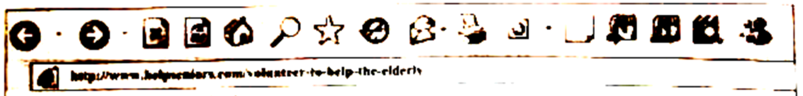
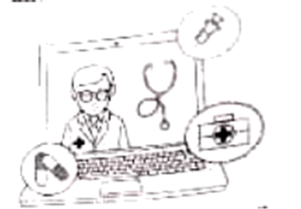

2020年北京市中考英语试题 · 阅读下列 第21、22、23、24、25、26、27、28、29、30、31、32、33题
三、阅读下列短文，根据短文内容，从短文后各题所给的A、B、C、D四个选项中，选择最佳选项。
 |
Helping Seniors(老年人) |
Matt | Posted 5 / 15 / 20 4：53PM |
I created Teens Helping Seniors with my friends. The group has about 200 volunteers. The volunteers deliver food or other supplies for the elderly in town. I spend six to eight hours a week buying food and making deliveries. By now we have completed 350 deliveries. |
Linda | Posted 5/ 15 / 20 6：25PM |
I organized Mittler Senior Technology a program to help the elderly learn how to use computers and smartphones. Now there are 50 local seniors in the weekly technology classes. I want to make sure that the seniors could stay connected to the world. |
Jordan | Posted 5 /16 /20 5:20PM |
I came up with a way to help lonely seniors with my friends. We call it the Joy 4 All Project. By dialing 569-4255 the elderly can hear pre-recorded jokes and poems. The hotline has received more than 1, 800 phone calls. |
Kathy | Posted 5 / 16 /20 7:46PM |
I heard that the seniors in the nursing home couldn’t see their families and friends very often, so my friends and I decided to cheer up the elderly by writing them letters. We want them to know that nobody is being forgotten. By now more than 100 students in my school have joined us. |
21. Who created Teens Helping Seniors?
A. Kathy.B. Linda.C. Jordan.D. Matt.
22. How many local seniors are there in the weekly technology classes?
A. 50.B. 100.C. 200.D. 350.
23. To help the elderly in the nursing home, Kathy and her schoolmates_________.
A. taught them how to use computers
B. recorded jokes and poem for them
C. wrote them letters to cheer them up
D. delivered food or other supplies for them
A Day at the Nature Center
Emma stared(凝视) sadly out of the window of the bus. Only 50 miles outside town was the farm. She thought about the farm all the time, especially the animals.
When her family sold the farm and moved to nearby town, Emma was excited. But when she got to the new school, she felt very lonely.
With a sigh(叹气), Emma turned her attention back to the present. The bus came to a stop. “Welcome to the Leinweber Nature Center,” her teacher said. “A guide will give us a presentation about animals, and then you’ll help to feed the baby squirrels, now, I want everyone to find a partner. ”
Emma didn’t have any friends yet—who would be her partner? Emma got close to Julia, a talkative and outgoing girl. “Could I be your partner?” Emma asked uncertainly.
“Sure,” said Julia warmly.
Together, the girls walked into the center. After the presentation, a keeper showed them how to hold the bottle of milk for baby squirrels. Then the girls started to feed their own baby squirrels.
After the babies finished eating, the keeper asked, “Would you like to help feed the adult squirrels, too?”
Emma was quick to volunteer, but when the keeper opened the first cage, the squirrel inside jumped out. Emma remained calm(镇静的), held out her hand, made quiet sounds, and then quickly got it.
“Wow!” Julia said. “You’re always so quiet, I thought you were afraid of everything, but you were brave.”
“I know that when animals are frightened or excited, you have to stay calm.”
The keeper nodded in agreement and asked Emma, “Would you be interested in volunteering to help out with the animals at the center?”
“Interested? I would love to work here! What an opportunity!” Emma was excited.
That afternoon, in the bus on the way back to school, Emma sat next to Julia, her new friend. A rush of newfound happiness washed over her.
24. How did Emma feel when she got to the new school?
A Lonely.B. Lucky.C. Surprised.D. Angry.
Lonely.B. Lucky.C. Surprised.D. Angry.
25. At the nature center, Emma and Julia_______.
A. took a chance to be tour guidesB. helped to feed the baby squirrels
C. asked the keeper many questionsD. made a presentation about nature
26. On the way back to school, Emma felt happy because_______.
A. the volunteers warmly welcomed her
B. the teacher praised her for her bravery
C. she found a place to care for animals and made a friend
D. she went back to the farm and learned a lot about animals
There are millions of recipes(菜谱) hidden in the boxes and hearts of grandmother and parents. These family recipes are a special part of our family history. Some of them have been passed down from generation(一代人) to generation.
“I realized I couldn't go home every weekend for my mom's delicious dishes,” says Shreya, who is about to enter university. Shreya has recently started following her mother around the kitchen, taking notes on how to make her “masala chai” and tasty kachoris.
"Those special tastes can immediately unlock a whole flood of emotions, memories and feelings of family, love, and comfort," says she.
She adds, "I am looking to the day when my kids will come to know of their grandmothers through the dishes they cooked."
But many of us find it difficult to keep the food connection with our busy life. Even if we have time, not many of us take the effort to collect and record the recipes from our grandmothers and parents. We often get a recipe on the phone and take it down quickly on a piece of paper. We just stick it onto the fridge for a week or two and forget about it as soon as the paper disappears from there.
Actually, there are simple ways to keep family recipes, Scrapbooks（剪贴薄）are easily found in the market. You can even add photos to record every detail of your memories about the recipe. With the help of some popular apps like Story Scans, recording family recipes has never been easier. What is needed is to scan（扫描） the recipes and record the story behind each of them. It can become the most meaningful work you have ever done with and for your family.
Keeping family recipes is saving and honoring our tradition so that future generations can continue to make family ties stronger. Every time you remember your loved ones, recreate one of the dishes from your collection and let the memories from the good old days comfort you. So why not gift your kids a family recipe book when they are starting a new life?
27. Why does Shreya follow her mother around the kitchen?
A. To clean up the kitchen.B. To note down recipes.
C. To prepare family dinners.D. To talk about family rules.
28. What can we learn from the passage?
A. Ways to record recipes can be easy.
B. Most people like writing recipe books.
C. Recipes have become popular with kids.
D. People often buy recipe books in the market.
29. Which of the following would be the best title for the passage?
A. Family Recipes: Secrets of Cooking
B. Family Recipes Are at a Crossroads
C. Family Recipes: Connections to Interests
D. Family Recipes Are More than Just Recipes

Today we can do everything with apps: pay bills, order food and shop for anything. Mobile technology means we can hold the world in our hands. However, when it comes to technology and health care, opportunities and challenges come together.
Let’s start with the ways to get health care. Telemedicine can allow a patient to use technology to see the doctor online and get a diagnosis (诊断) and instructions without leaving home.
In addition, there are many patient websites. These allow for different kinds of interactions about our health needs without involving the medical team. Setting a date with doctors and reading lab results are readily achieved by technology.
A whole new age of medical care seems likely (可能的) to come in the future. But every coin has two sides. What might be on the other side of techno-health care?
Firstly, we should think about the health care experience as a whole. A usual visit to a doctor begins with a receptionist (接待员) , who can see and tell how a patient is doing, This may influence the treatment effect. It’s unlikely that a patient website will have such intuition.
Next, sharing the details of one's life requires trust, which takes time to build. This is certainly true in health care, where some of life's best and worst moments involve doctors. The human touch should not be undervalued and is unlikely to be there over the smartphone.
Lastly test results can be difficult to understand. When someone without a medical degree sees a flagged result with no explanation on the website, there's room for all kinds of stories to form in their minds—and also great worry.
So how does medicine adapt (适应) to the new technology age? Very talented companies are working on it .There is medical equipment(设备) that can be used at home to send necessary signs and heart sounds through telemedicine . It seems likely that some companies will find a way to explain test results.
But what it will not achieve is the warmth of human interaction and touch. Patients often need someone to listen to —and care about—their journey story, which will never be realized through a human-less technology. Technology should be a tool, but depending on it totally will most certainly have unexpected effects. Let's not allow our humanity to be one of them.
30. According to the passage, how does technology help health care?
A. It encourages doctors to voice their needs on the websites
B. It offers the patient a convenient way to get a diagnosis
C. It improves relations between doctors and patients.
D. It provides an opportunity to build a medical team
31. The word “intuition” in Paragraph 5 probably means______.
A. an ability to understandB. an interesting experience
C. a chance to winD. a fair decision
32. What do you know about techno-health care from the passage?
A. Patient websites require trust from doctors.
B. Talented companies can give medical advice.
C. Flagged results may cause worry for patients.
D. Medical equipment collects patients’ stories.
33. The writer probably agrees that_____.
A. technology can deal with unexpected effects.
B. telemedicine can take the place of usual health care.
C. it is difficult for patients to adapt to the new technology age.
D. techno-health care should take humanity into consideration.